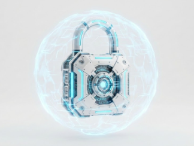
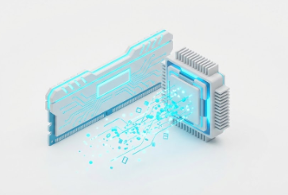
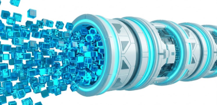
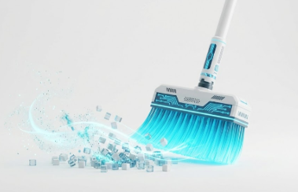
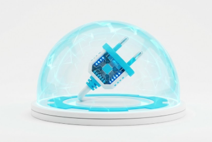

Chiffrement Militaire
Algorithme natif AES-256-CBC. Vos fichiers sont mathématiquement verrouillés et rendus totalement illisibles pour le système d'exploitation.

Déchiffrement In-Memory
Aucun fichier temporaire n'est jamais écrit sur votre disque dur. Vos médias sont déchiffrés à la volée directement dans la mémoire vive (RAM).

Architecture de Flux Massif
Importez et sauvegardez des dizaines de Gigaoctets sans saturer votre ordinateur. Centurion gère les flux à plus de 15 Go par minute.

Opération Fantôme
Après l'importation sécurisée de vos fichiers dans le coffre, le "Shredder" intégré détruit physiquement les fichiers originaux de votre PC pour ne laisser aucune trace.

100% Hors-Ligne
Aucun compte requis. Aucune connexion serveur. Fuyez les failles du Cloud : Centurion tourne entièrement et exclusivement sur votre machine.
Galerie Multimédia HD
Organisez vos photos, regardez vos films chiffrés avec fluidité grâce au lecteur vidéo intégré et classez vos secrets par catégories incassables.